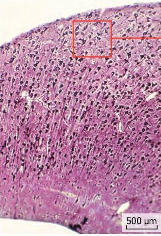
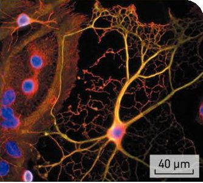
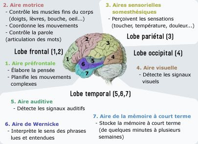
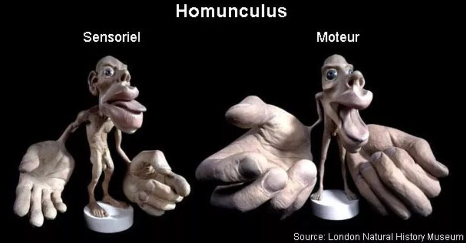
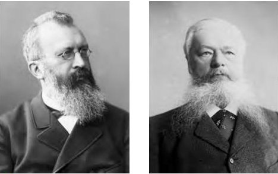
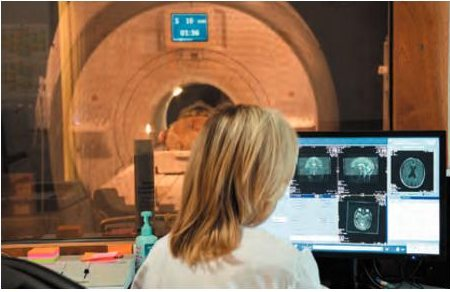
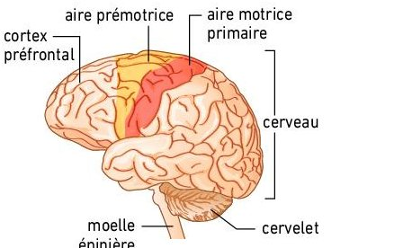

Thème 3 · Chapitre 2 · Activités 1 et 2
Le cerveau et le mouvement volontaire
Deux activités pour découvrir de quelles cellules est fait le cerveau, puis pour localiser la région du cortex qui commande nos mouvements volontaires. Tu observes ici les documents, et tu écris sur ta fiche papier au fur et à mesure.
- Prends ta ficheTon professeur te la donne en classe.
- Observe les documentsTouche les repères rouges sur les photos pour savoir ce que tu vois. Touche une image pour l'agrandir.
- Complète la ficheQuand tu vois l'encadré « Sur ta fiche », réponds sur papier, puis coche « C'est fait ».
Les cellules du cerveau
Le cerveau est un organe très complexe. Après plus d'un siècle de recherches, on commence à comprendre son organisation, notamment à l'échelle des cellules.
Problématique : quelles cellules constituent le cerveau et quels sont leurs rôles ?
Le cerveau dans la boîte crânienne
Situé dans la boîte crânienne, l'encéphale est formé du cerveau, du cervelet et du tronc cérébral. Le cerveau est formé de deux hémisphères dont la surface présente de nombreux replis, les circonvolutions.
Touche un repère rouge sur la photo, ou un nom dans la liste.
Une coupe coronale de cerveau humain
En coupe, le cerveau montre deux grands types de tissus : la substance grise (le cortex en périphérie, et les centres nerveux profonds) et la substance blanche. Touche chaque repère.
Touche un repère rouge sur la coupe.
Au microscope : le cortex et ses neurones
L'observation microscopique du cortex montre une organisation en plusieurs couches de neurones, dits pyramidaux. Le nombre total de neurones du cerveau est estimé entre 86 et 100 milliards.

Touche un repère rouge.
Les cellules gliales
Les neurones ne sont qu'une partie des cellules du cerveau. Les autres sont les cellules gliales (leur nom vient de leur aspect « gluant »). On sait depuis peu qu'elles sont essentielles à la survie et au bon fonctionnement des neurones. Regarde la vidéo, puis explore le document.
Touche une cellule pour connaître ses caractéristiques et son rôle.

Bilan de l'activité 1
Relis tes réponses des étapes 1 à 4, puis réponds à la problématique en quelques lignes : quelles cellules constituent le cerveau et quels sont leurs rôles ? Dis aussi comment ces cellules coopèrent.
Le cortex moteur et la voie motrice
Contrairement aux mouvements réflexes, la commande des mouvements volontaires fait nécessairement intervenir le cerveau : c'est au niveau du cortex cérébral que se manifestent la conscience des perceptions et la volonté de commander des mouvements.
Problématique : comment l'exploration du cortex permet-elle de situer les territoires du cerveau à l'origine de la motricité volontaire ?
Le cortex : des lobes et des aires
Le cortex est la substance grise périphérique, « l'écorce » du cerveau. Épais de 1 à 5 mm, il est formé de plusieurs couches de neurones interconnectés ; dessous, la substance blanche est formée de leurs axones. Sa surface atteint environ 0,26 m² : il est plissé, divisé en lobes par des sillons profonds, et en zones fonctionnelles, les aires.
Touche un repère : lobe, sillon ou autre partie de l'encéphale.

L'aire motrice primaire et l'homoncule moteur
Dès 1870, Eduard Hitzig et Gustav Fritsch montrent que la stimulation électrique de zones précises du cortex d'un animal provoque des contractions musculaires de régions précises. Toute stimulation d'une zone de l'aire motrice primaire se traduit par le mouvement d'une partie du corps ; une lésion de cette zone entraîne la paralysie de cette partie. Cette carte s'appelle l'homoncule moteur, ou homunculus de Penfield.
Choisis une partie du corps pour voir où est son territoire sur l'aire motrice primaire.


L'IRM, pour explorer le cerveau
Depuis les années 1990, l'IRM fonctionnelle permet de voir les parties du cerveau en fonctionnement. Regarde la vidéo, puis réponds aux trois questions.

Les trois plans de coupe
L'IRM explore le corps en trois dimensions : on peut le « découper » selon trois plans. Touche chaque repère : quel est le nom de la coupe, et dans quel sens explore-t-on la tête en la déplaçant ?
Touche un repère 1, 2 ou 3.
Le plan coronal est aussi appelé plan frontal, et le plan axial, plan transversal.
Reconnaître une coupe
Voici six images obtenues par IRM. Pour chacune, indique le type de coupe. Aide-toi des repères : on voit le visage de profil ? les deux hémisphères côte à côte ? le dessus de la tête ?
Images A à F : document de l'activité.

Localiser l'aire qui commande un mouvement
Sur ces IRM fonctionnelles, les zones en couleur sont les régions du cortex dont l'activité augmente pendant le mouvement. Sur les captures d'EduAnat2, Ga indique la gauche du sujet et Dr sa droite ; Av l'avant et Ar l'arrière. Touche une image pour l'agrandir.

Placer l'aire motrice primaire
D'après tes observations, où se trouve l'aire motrice primaire ? Colorie-la d'abord sur le schéma 1 de ta fiche et marque d'une croix le territoire de la main. Ensuite seulement, vérifie ici.

La voie de la motricité volontaire
Des messages nerveux moteurs partent du cortex moteur en direction des motoneurones de la moelle épinière. Pour la voie qui commande les muscles des membres, le faisceau de neurones croise la ligne médiane juste en dessous du bulbe rachidien.
- Le corps cellulaire d'un neurone pyramidal du cortex moteur de l'hémisphère droit émet un message nerveux.
- Son axone descend dans la substance blanche, puis dans le tronc cérébral.
- Juste sous le bulbe rachidien, il croise la ligne médiane : c'est la décussation.
- Dans la moelle épinière, du côté gauche, il fait synapse avec un motoneurone.
- Le motoneurone commande une fibre musculaire de l'hémicorps gauche.
À toi : sur ta fiche, représente la voie qui commande un muscle de l'hémicorps droit. Ensuite, vérifie.
Bilan de l'activité 2
Réponds à la problématique : comment l'exploration du cortex permet-elle de situer les territoires à l'origine de la motricité volontaire ? Utilise les mots : stimulation, lésion, IRM fonctionnelle, aire motrice primaire, lobe frontal, sillon central, homoncule, controlatéral, décussation, motoneurone.
Devoir : explorer de vraies IRM avec EduAnat2
Tu disposes des IRM anatomiques et fonctionnelles d'un sujet sain, le sujet 13112, qui reçoit l'instruction « cliquez trois fois sur le bouton droit » ou « cliquez trois fois sur le bouton gauche ».
- Ouvre le logiciel en ligne : EduAnat2 Online. Il permet de superposer une IRM fonctionnelle à l'IRM anatomique d'un individu.
- Regarde la vidéo qui présente le logiciel.
- Ouvre l'IRM anatomique du sujet 13112, puis les calques fonctionnels « main droite versus main gauche » et « main gauche versus main droite ».
- Sur les trois vues, localise l'aire activée pour les mouvements de la main droite, puis de la main gauche.
- Fais des captures des trois coupes pour chaque main, sur une feuille à part, puis complète la case 15 de ta fiche.